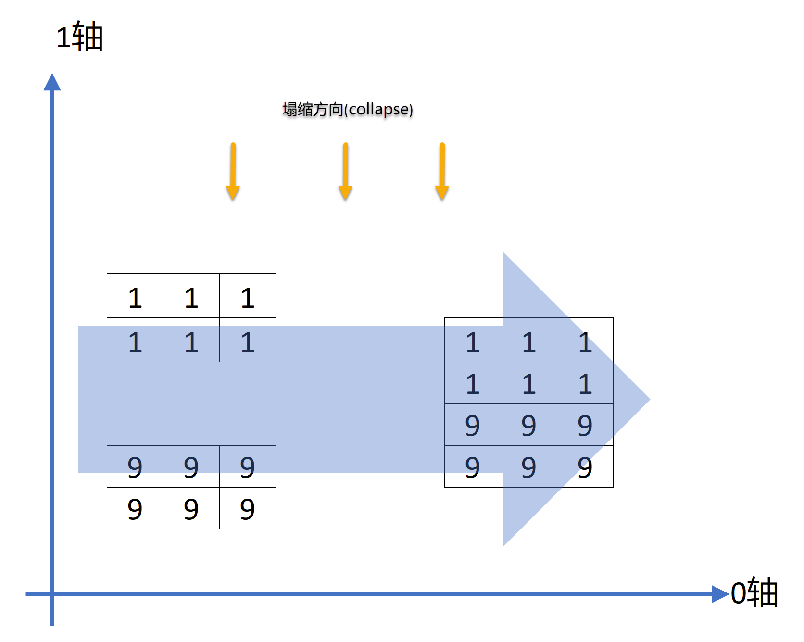
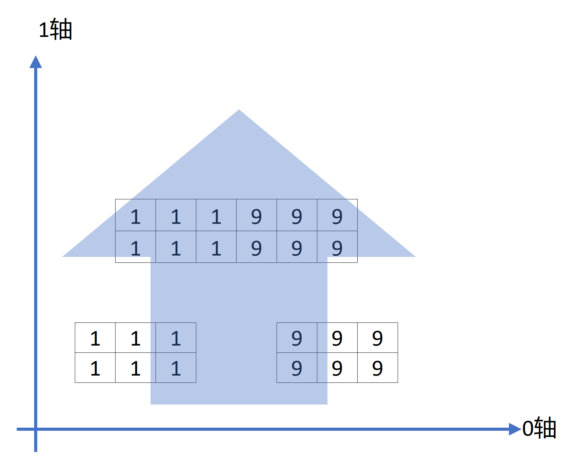

NumPy基础：数组与向量化计算
- NumPy ndarry：多维数组对象
- 通用函数：快速的逐元素数组函数
- 使用数组进行面向数组编程
- 使用数组进行文件输入和输出
- 线性代数
- 伪随机数生成
- 示例：随机漫步
NumPy ndarry：多维数组对象
约定：
import numpy as np
import pandas as pd
import matplotlib.pyplot as plt
ndarray: N-维数组对象
一个ndarray是一个通用的多维同类数据容器，也就是说，它包含的每一个元素均为相同类型； 每一个数组都有一个shape属性，用来表征数组每一维度的数量； 每一个数组都有一个dtype属性，用来描述数组的数据类型；
下面是标准数组的生成函数
- array: 将输入数据（列表、元组、数组，其他序列）转换为ndarray，如果不显式指明数据类型，将自动推断；默认复制所有的输入数据。
- asarray：将输入转换为ndarray，但如果输入已经是ndarray则不再复制。
- arange：Python内置函数range的数组版，返回一个数组。
下面是用Numpy.random()一个生成一个随机数组的例子，注意data01的类型是'numpy.ndarray'。可以在ndarray类型数组上叠加一下数学操作。
data01 = np.random.randn(2, 3)
print(type(data01))
# <class 'numpy.ndarray'>
print(data01)
# [[ 0.12047302 -1.13499045 -0.39311368]
# [ 1.54046881 0.01254838 -3.65090952]]
print(data01 * 10) # 给data加上一个数学操作, 所有的元素都同时乘以了10
# [[ 1.20473022 -11.3499045 -3.93113676]
# [ 15.40468806 0.12548383 -36.50909515]]
print(data01 + data01) # 给data加上一个数学操作, 数组中的对应元素进行了相加
# [[ 0.24094604 -2.2699809 -0.78622735]
# [ 3.08093761 0.02509677 -7.30181903]]
print(data01.shape)
# (2, 3)
print(data01.dtype)
# float64
当表达“数组”、“NumPy数组”或“ndarray”时，都表示同一个对象：ndarray对象。
看下面的例子：
data01是一个列表（list）类型，通过Numpy.array转换成Numpy的ndarray类型。- 在
np.array中，除非显式地指定，如np.array(data01, dtype=np.int8)，否则np.array会自动推断生成数组的数据类型array01.dtype。 - 使用
astype()方法显式地转换数组的数据类型。使用astype()时总是生成一个新的数组，即使你传入的dtype与之前一样。 data02是一个嵌套列表[[1, 2, 3, 4], [5, 6, 7, 8]]，通过np.array()方法转换成多维数组，前提是每个子列表的长度要一致。
data01 = [6, 7.5, 8, 0, 1]
print(data01)
# [6, 7.5, 8, 0, 1]
print(type(data01))
# <class 'list'>
array01 = np.array(data01)
print("矩阵类型", type(array01))
# 矩阵类型 <class 'numpy.ndarray'>
print("样本矩阵", array01)
# 样本矩阵 [6. 7.5 8. 0. 1. ]
print("数组维度", array01.ndim)
# 数组维度 1
print("矩阵形状", array01.shape)
# 矩阵形状 (5,) 一行五列
print("矩阵数据类型", array01.dtype)
# float64
data02 = [[1, 2, 3, 4], [5, 6, 7, 8]]
array02 = np.array(data02)
print("样本矩阵\n", array02)
# 样本矩阵
# [[1 2 3 4]
# [5 6 7 8]]
print("数组维度", array02.ndim)
# 数组维度 2
print("矩阵形状", array02.shape)
# 矩阵形状 (2, 4)
print("矩阵数据类型", array02.dtype)
# 矩阵数据类型 int64
print("矩阵0轴向求和", array02.sum(axis=0))
# 矩阵0轴向求和 [ 6 8 10 12]
print("矩阵1轴向求和", array02.sum(axis=1))
# 矩阵1轴向求和 [10 26]
array03 = array02.astype(np.float64)
print(array03.dtype)
# float64
print(array03)
# [[1. 2. 3. 4.]
# [5. 6. 7. 8.]]
zeros()方法可以一次性创造全0数组。
print(np.zeros(10))
# [0. 0. 0. 0. 0. 0. 0. 0. 0. 0.]
ones()方法可以一次性创造全1数组。注意，传参shape是一个元组(3, 5)。
print(np.ones((3, 5)))
# [[1. 1. 1. 1. 1.]
# [1. 1. 1. 1. 1.]
# [1. 1. 1. 1. 1.]]
empty()方法可以创建一个没有初始化数值的数组。但是，使用np.empty来生成一个全0数组，并不可靠，有些时候它可能会返回未初始化的垃圾数值
print(np.empty((2, 3, 2)))
# [[[2.30116964e-316 0.00000000e+000]
# [2.10077583e-312 6.79038654e-313]
# [2.22809558e-312 2.14321575e-312]]
#
# [[2.35541533e-312 6.79038654e-313]
# [2.22809558e-312 2.14321575e-312]
# [2.46151512e-312 2.41907520e-312]]]
NumPy轴
一句话总结：将NumPy轴视为我们可以执行操作的方向。
看下面的例子：
arr_1 = np.array([[1, 1, 1], [1, 1, 1]])
arr_2 = np.array([[9, 9, 9], [9, 9, 9]])
print(arr_1)
# [[1 1 1]
# [1 1 1]]
print(arr_2)
# [[9 9 9]
# [9 9 9]]
沿0轴合并的思路是，两个数组沿0轴方向，向0轴“塌缩”
result = np.concatenate([arr_1, arr_2], axis=0)
print(result)
# [[1 1 1]
# [1 1 1]
# [9 9 9]
# [9 9 9]]

沿1轴合并的思路是，两个数组沿1轴方向，向1轴“塌缩”
result = np.concatenate([arr_1, arr_2], axis=1)
print(result)
# [[1 1 1 9 9 9]
# [1 1 1 9 9 9]]

我们来看NumPy的三维数组。
array1 = np.arange(36).reshape((3, 3, 4))
print(array1)
# [[[ 0 1 2 3]
# [ 4 5 6 7]
# [ 8 9 10 11]]
#
# [[12 13 14 15]
# [16 17 18 19]
# [20 21 22 23]]
#
# [[24 25 26 27]
# [28 29 30 31]
# [32 33 34 35]]]
这样看会容易理解一些，0轴有3行，1轴有3列，2轴有4个元素：
[[[ 0 1 2 3], [ 4 5 6 7], [ 8 9 10 11]]
[[12 13 14 15], [16 17 18 19], [20 21 22 23]]
[[24 25 26 27], [28 29 30 31], [32 33 34 35]]]
输出：轴0索引号：0；轴1索引号：0；轴2索引号：全部
print(array1[0, 0, :])
# [0 1 2 3]
输出：轴0索引号：0；轴1索引号：0；轴2索引号：1
print(array1[0, 0, 1])
# 1
NumPy数组算术
一个标量就是一个单独的数。一个向量就是一列数，这些数是有序排列的。 矩阵是二维数组，其中的每一个元素被两个索引而非一个所确定。
几何代数中定义的张量是基于向量和矩阵的推广，我们可以将标量视为零阶张量，矢量视为一阶张量，那么矩阵就是二阶张量。
带有标量计算的算术操作，会把计算参数传递给数组的每一个元素。
同尺寸数组之间的比较array04 == array04，会产生一个布尔值数组 不同尺寸的数组间的操作，将会用到广播特性（broadcasting）。
array04 = np.array([
[1, 2, 3, 4, 5],
[3, 4, 5, 6, 7],
[5, 6, 7, 8, 9]
], dtype=int)
print(array04 + array04)
# [[ 2 4 6 8 10]
# [ 6 8 10 12 14]
# [10 12 14 16 18]]
print(array04 - array04)
# [[0 0 0 0 0]
# [0 0 0 0 0]
# [0 0 0 0 0]]
print(array04 * array04)
# [[ 1 4 9 16 25]
# [ 9 16 25 36 49]
# [25 36 49 64 81]]
print(array04 / array04)
# [[1. 1. 1. 1. 1.]
# [1. 1. 1. 1. 1.]
# [1. 1. 1. 1. 1.]]
print(1 / array04)
# [[1. 0.5 0.33333333 0.25 0.2 ]
# [0.33333333 0.25 0.2 0.16666667 0.14285714]
# [0.2 0.16666667 0.14285714 0.125 0.11111111]]
print(array04 == array04)
# [[ True True True True True]
# [ True True True True True]
# [ True True True True True]]
基础索引与切片
ndarray对象的内容可以通过索引（indexing）或切片（slicing）来访问和修改，ndarray对象中的元素索引从零开始。 有三种可用的索引方法：字段访问，基本切片和高级索引。
索引（indexing）：获取数组中特定位置元素的过程。
切片（slicing）：获取数组元素子集的过程。数组的切片是原数组的视图。这意味着任何对于视图的修改都会反映到原数组上。数组的切片, 返回的对象是降低一个维度的数组。
一维数组的索引和切片：与Python的列表类似：
-
a[n]：返回第n+1个元素。如果n为负数，则返回倒数第n个元素。 -
a[n:m:k]：起始编号n，终止编号m，步长k，用冒号分割。遵循左闭右开的原则，即[n, m)。如果n为空，即n = 0；如果m为空，即m = len(a)。
多维数组的索引和切片：
a[n,m,k,...]：每个维度一个索引值，最外层列表（list）中第n个元素，次外层列表（list）中第m个元素，以此类推。如果n为负数，则返回倒数第n个元素。a[n1:m1:k1,n2:m2:k2,n3:m3:k3,...]：每个维度的切片方法与一维数组相同。顺序为从外到内。
array05 = np.arange(10)
print(array05)
# [0 1 2 3 4 5 6 7 8 9]
# 从索引值5开始到索引值7的一个切片。
print(array05[5:8])
# [5 6 7]
array06 = array05[5:8]
# 传入一个数值给数组的切片，数值被传递给了整个切片。不写切片值的[:]将会引用数组的所有值
array06[:] = 12
print(array06)
# [12 12 12]
# 切片的修改会反映到原数组上
print(array05)
# [ 0 1 2 3 4 12 12 12 8 9]
# 输出3维矩阵，3行3列，共9个元素，每个元素是一个含3个元素的列表
array07 = np.array([
[[0, 1, 2], [3, 4, 5], [6, 7, 8]],
[[9, 0, 1], [2, 3, 4], [5, 6, 7]],
[[8, 9, 0], [1, 2, 3], [4, 5, 6]],
])
# 输出3维矩阵，显示原矩阵的第1，2行的2，3列元素，不要把索引号和这里的表述行号混淆。
print(array07[:2, 1:])
# [[[3 4 5] [6 7 8]]
# [[2 3 4] [5 6 7]]]
print(array07[:2, 1:].shape)
# (2, 2, 3)
# 降维，输出原矩阵的第3行
print(array07[2])
# [[8 9 0] [1 2 3] [4 5 6]]
print(array07[2].shape)
# (3, 3)
# 降维，输出原矩阵的第3行
print(array07[2, :])
# [[8 9 0] [1 2 3] [4 5 6]]
print(array07[2, :].shape)
# (3, 3)
# 降维，输出原矩阵的第3行（只有三行，所以[2:, :]等同于[2, :]）
print(array07[2:, :])
# [[[8 9 0] [1 2 3] [4 5 6]]]
print(array07[2:, :].shape)
# (1, 3, 3)
# 输出原矩阵的1，2列
print(array07[:, :2])
# [[[0 1 2] [3 4 5]]
# [[9 0 1] [2 3 4]]
# [[8 9 0] [1 2 3]]]
print(array07[:, :2].shape)
# (3, 2, 3)
# 降维，输出原矩阵的第2行前2个元素
print(array07[1, :2])
# [[9 0 1] [2 3 4]]
print(array07[1, :2].shape)
# (2, 3)
# 输出原矩阵的第2行前2个元素
print(array07[1:2, :2])
# [[[9 0 1] [2 3 4]]]
print(array07[1:2, :2].shape)
# (1, 2, 3)
# 将原矩阵的第2行赋值给变量
old_value = array07[2].copy()
print(old_value)
# [[8 9 0] [1 2 3] [4 5 6]]
# 修改原矩阵的第2行的值，标量和数组都可以传递给 array07[2]
array07[2] = 25
print(array07)
# [[[ 0 1 2] [ 3 4 5] [ 6 7 8]]
# [[ 9 0 1] [ 2 3 4] [ 5 6 7]]
# [[25 25 25] [25 25 25] [25 25 25]]]
# 将变量值赋值给原矩阵的第2行
array07[2] = old_value
print(array07)
# [[[0 1 2] [3 4 5] [6 7 8]]
# [[9 0 1] [2 3 4] [5 6 7]]
# [[8 9 0] [1 2 3] [4 5 6]]]
布尔索引
布尔值索引（Boolean indexing）是通过一个布尔数组来索引目标数组，以此找出与布尔数组中值为True的对应的目标数组中的数据。布尔数组的长度必须与目标数组对应的轴的长度一致。
使用布尔值索引（Boolean indexing）选择数据时，总是生成数据的拷贝，即使返回的数组并没有任何变化。
假设我们的数据都在数组中，并且数组中的数据是一些存在重复的人名。用randn函数生成一些标准正态(standard normal)分布的数据。假设每个人名都和data数组中的一行相对应，并且我们想要选中所有’Bob’对应的行。
names = np.array(['Bob', 'Joe', 'Will', 'Bob', 'Will', 'Joe', 'Joe'], dtype='<U4')
data = np.random.randn(7, 4)
print(names)
# ['Bob' 'Joe' 'Will' 'Bob' 'Will' 'Joe' 'Joe']
print(data)
# [[ 0.19233985 -0.22530396 -0.68464485 0.03961609]
# [ 0.26189893 -0.86823302 0.72726864 0.16122945]
# [-0.70564457 0.59179465 0.05572085 -1.79999391]
# [-0.21465342 0.09236611 0.02982635 -1.08500576]
# [ 1.17260699 -0.53172414 0.16224439 0.60597493]
# [ 0.49879926 -0.64871168 0.57597095 0.86329327]
# [-0.64902274 -0.92406415 0.40021708 -0.18222566]]
print(names == 'Bob')
# [ True False False True False False False]
# 上述data的行索引为0、3的值（对应于Bob为True）
print(data[names == 'Bob'])
# [[ 0.19233985 -0.22530396 -0.68464485 0.03961609]
# [-0.21465342 0.09236611 0.02982635 -1.08500576]]
# 上述data的行索引为0、3且列索引为2、3的值（对应于Bob为True）
print(data[names == 'Bob', 2:])
# [[-0.68464485 0.03961609] [ 0.02982635 -1.08500576]]
# 上述data的行索引为0、3且列索引为3的值（对应于Bob为True）
print(data[names == 'Bob', 3])
# [ 0.03961609 -1.08500576]
使用!=或在条件表达式前使用～对条件取反, 选择除了’Bob’以外的其他数据。
print(names != 'Bob')
print(data[~(names == 'Bob')])
选择三个名字中的两个时，可以对多个布尔值条件进行联合，使用数学操作符如&（and）和|（or）。
mask = (names == 'Bob') | (names == 'Will')
print(mask)
# [ True False True True True False False]
# 更新直接作用在`data`数据集上，不是在副本中修改。
data[names == 'Joe'] = 7
print(data)
# [[ 1.12584226 -1.09988707 0.49842702 0.76308186]
# [ 7. 7. 7. 7. ]
# [ 1.54212949 -0.34487439 -1.47775736 -0.25724376]
# [ 0.60943059 -0.0164697 0.26681455 -1.70871624]
# [ 0.28010374 -0.32339505 -0.95289544 2.76739316]
# [ 7. 7. 7. 7. ]
# [ 7. 7. 7. 7. ]]
神奇索引（花式索引）
神奇索引（Fancy Indexing），也翻译为花式索引或复杂索引，用于描述使用整数数组进行数据索引，这里的数组，可以是NumPy的数组，也可以是python自带的列表（list）。神奇索引与切片不同，它总是将数据复制到一个新的数组中（副本）。 特别注意的一点是，使用fancy indexing返回数组的shape，是索引数组的shape，而不是被索引的原数组的shape。
使用fancy indexing时要特别注意的一点是返回数组的shape反映的是索引数组的shape而不是被索引的原数组的shape。
假设有一个8×4的数组：
array08 = np.empty((8, 4)) # 参数是个元组(8, 4)。
for i in range(8):
array08[i] = i
print(array08)
# [[0. 0. 0. 0.]
# [1. 1. 1. 1.]
# [2. 2. 2. 2.]
# [3. 3. 3. 3.]
# [4. 4. 4. 4.]
# [5. 5. 5. 5.]
# [6. 6. 6. 6.]
# [7. 7. 7. 7.]]
# 输出索引为2和-2的行值。传递一个包含指明所需顺序的列表[2, -2]（或数组），选出一个符合特定顺序的子集
print(array08[[2, -2]])
# [[2. 2. 2. 2.]
# [6. 6. 6. 6.]]
# 用0~31生成一个8x4数组
array09 = np.arange(32).reshape((8, 4))
print(array09)
# [[ 0 1 2 3]
# [ 4 5 6 7]
# [ 8 9 10 11]
# [12 13 14 15]
# [16 17 18 19]
# [20 21 22 23]
# [24 25 26 27]
# [28 29 30 31]]
print(array09[[1, 5, 7, 2]]) # 数组[1, 5, 7, 2]指定了输出顺序
# [[ 4 5 6 7]
# [20 21 22 23]
# [28 29 30 31]
# [ 8 9 10 11]]
print(array09[[0, 3, 1, 2]])
# [[ 0 1 2 3]
# [12 13 14 15]
# [ 4 5 6 7]
# [ 8 9 10 11]]
print(array09[[1, 5, 7, 2], [0, 3, 1, 2]])
# [ 4 23 29 10]
array09[[1, 5, 7, 2]]中通过一个列表[1, 5, 7, 2]来指定输出顺序。
array09[[1, 5, 7, 2], [0, 3, 1, 2]]可以理解为基于array09[[1, 5, 7, 2]]输出的矩阵，通过[0, 3, 1, 2]指定了结果集的每一行选取的值，比如，3代表结果集[20 21 22 23]的第三个元素（23）。或者，可以理解为，元素（1, 0）、（5, 3）、（7, 1）和（2, 2）被选中。
数组转置和换轴
数组转置，有T属性、transpose()方法、swapaxes()方法。
swapaxes()方法默认是(0轴, 1轴)，即swapaxes(0, 1)，返回的是数据的视图，没有对数据进行复制。
array10 = np.arange(15).reshape((3, 5))
print(array10)
# [[ 0 1 2 3 4]
# [ 5 6 7 8 9]
# [10 11 12 13 14]]
# 矩阵转置（T属性）
print(array10.T)
# [[ 0 5 10]
# [ 1 6 11]
# [ 2 7 12]
# [ 3 8 13]
# [ 4 9 14]]
# 矩阵转置（transpose()方法）
print(array10.transpose())
# [[ 0 5 10]
# [ 1 6 11]
# [ 2 7 12]
# [ 3 8 13]
# [ 4 9 14]]
# 矩阵转置（swapaxes()方法）
print(array10.swapaxes(1, 0))
# [[ 0 5 10]
# [ 1 6 11]
# [ 2 7 12]
# [ 3 8 13]
# [ 4 9 14]]
通过T属性，计算矩阵内积（Inner Product）。矩阵内积参照向量内积的定义是：两个向量对应分量乘积之和。
array10 = np.arange(6).reshape((2, 3))
print(array10)
# [[0 1 2]
# [3 4 5]]
print(array10.T)
# [[0 3]
# [1 4]
# [2 5]]
print(np.dot(array10, array10.T))
# [[ 5 14]
# [14 50]]
对于更高维度的数组，transpose()方法可以接收包含轴编号的元组，用于置换轴。
array11 = np.arange(36).reshape((3, 3, 4))
print(array11)
# [[[ 0 1 2 3]
# [ 4 5 6 7]
# [ 8 9 10 11]]
#
# [[12 13 14 15]
# [16 17 18 19]
# [20 21 22 23]]
#
# [[24 25 26 27]
# [28 29 30 31]
# [32 33 34 35]]]
print(array11.transpose((0, 1, 2))) # 默认是(0轴, 1轴, 2轴)。所以输出原矩阵
# [[[ 0 1 2 3]
# [ 4 5 6 7]
# [ 8 9 10 11]]
#
# [[12 13 14 15]
# [16 17 18 19]
# [20 21 22 23]]
#
# [[24 25 26 27]
# [28 29 30 31]
# [32 33 34 35]]]
print(array11.transpose((1, 0, 2))) # 输出顺序调整为原矩阵的(1轴, 0轴, 2轴)
# [[[ 0 1 2 3]
# [12 13 14 15]
# [24 25 26 27]]
#
# [[ 4 5 6 7]
# [16 17 18 19]
# [28 29 30 31]]
#
# [[ 8 9 10 11]
# [20 21 22 23]
# [32 33 34 35]]]
print(array11.swapaxes(1, 0)) # 同上transpose((1, 0, 2))
# [[[ 0 1 2 3]
# [12 13 14 15]
# [24 25 26 27]]
#
# [[ 4 5 6 7]
# [16 17 18 19]
# [28 29 30 31]]
#
# [[ 8 9 10 11]
# [20 21 22 23]
# [32 33 34 35]]]
print(array11.transpose((2, 1, 0)))
# [[[ 0 12 24]
# [ 4 16 28]
# [ 8 20 32]]
#
# [[ 1 13 25]
# [ 5 17 29]
# [ 9 21 33]]
#
# [[ 2 14 26]
# [ 6 18 30]
# [10 22 34]]
# [[ 3 15 27]
# [ 7 19 31]
# [11 23 35]]]
通用函数：快速的逐元素数组函数
通用函数，也可以称为ufunc，是一种在ndarray数据中进行逐元素操作的函数。
某些简单函数接收一个或多个标量数值，并产生一个或多个标量结果，而通用函数就是对这些简单函数的向量化封装。
一元通用函数 * abs、fabs：逐元素地计算整数、浮点数或复数的绝对值 * sqrt：计算每个元素的平方根（与arr0.5相等） * square：计算每个元素的平方（与arr2相等） * exp：计算以e为底, 数组元素为幂次的指数函数
二元通用函数 * add：将数组的对应元素相加。 * subtract：在第二个数组中，将第一个数组中包含的元素去除。 * multiply：将数组的对应元素相乘。 * divide，floor_divide：除、或整除（放弃余数） * power：将第二个数组的元素作为第一个数组对应元素的幂次方。 * maximun、fmax：逐个元素计算最大值，fmax忽略NaN。 * minimum、fmin：逐个元素计算最小值，fmin忽略NaN。 * mod：按元素的求模计算（即求除法的余数）。 * copysign：将第一个数组的符号值改为第二个数组的符号值。 * greater、greater_euqal、less、less_equal、equal、not_euqal：进行逐个元素的比较，返回布尔值数组。 * logical_and、logical_or、logical_xor：进行逐个元素的逻辑操作。
array12 = np.arange(10).reshape((2, 5))
print(array12)
# [[0 1 2 3 4]
# [5 6 7 8 9]]
print(np.sqrt(array12))
# [[0. 1. 1.41421356 1.73205081 2. ]
# [2.23606798 2.44948974 2.64575131 2.82842712 3. ]]
print(np.exp(array12))
# [[1.00000000e+00 2.71828183e+00 7.38905610e+00 2.00855369e+01 5.45981500e+01]
# [1.48413159e+02 4.03428793e+02 1.09663316e+03 2.98095799e+03 8.10308393e+03]]
array13 = [1, 4, 5, 8, 9]
array14 = [2, 3, 6, 7, 10]
print(np.maximum(array13, array14)) # numpy.maximum逐个元素地将x和y中元素的最大值计算出来。
# [ 2 4 6 8 10]
print(np.add(array13, array14)) # numpy.maximum逐个元素地将x和y中元素的和计算出来。
# [ 3 7 11 15 19]
array15 = np.random.randn(7) * 5
print(array15)
# [-7.54395135 -0.065131 2.71582306 2.2432261 11.02637158 6.73968036 2.96895379]
remainder, whole_part = np.modf(array15) # modf返回一个浮点值数组的小数部分和整数部分
print(remainder)
# [-0.54395135 -0.065131 0.71582306 0.2432261 0.02637158 0.73968036 0.96895379]
print(whole_part)
# [-7. -0. 2. 2. 11. 6. 2.]
使用数组进行面向数组编程
利用数组表达式来替代显式循环的方法，称为向量化。\ 向量化的数组操作会比纯Python的等价实现在速度上快一到两个数量级（甚至更多）
array = np.arange(-5, 5, 1, dtype=int)
print("样本矩阵 \n", array)
xs, ys = np.meshgrid(array, array) # np.meshgrid函数接收两个一维数组，并根据两个数组的所有(x, y)对生成一个二维矩阵
print("生成x轴向2维矩阵 \n", xs)
print("生成y轴向2维矩阵 \n", ys)
# 样本矩阵
# [-5 -4 -3 -2 -1 0 1 2 3 4]
# 生成x轴向2维矩阵
# [[-5 -4 -3 -2 -1 0 1 2 3 4]
# [-5 -4 -3 -2 -1 0 1 2 3 4]
# [-5 -4 -3 -2 -1 0 1 2 3 4]
# [-5 -4 -3 -2 -1 0 1 2 3 4]
# [-5 -4 -3 -2 -1 0 1 2 3 4]
# [-5 -4 -3 -2 -1 0 1 2 3 4]
# [-5 -4 -3 -2 -1 0 1 2 3 4]
# [-5 -4 -3 -2 -1 0 1 2 3 4]
# [-5 -4 -3 -2 -1 0 1 2 3 4]
# [-5 -4 -3 -2 -1 0 1 2 3 4]]
# 生成y轴向2维矩阵
# [[-5 -5 -5 -5 -5 -5 -5 -5 -5 -5]
# [-4 -4 -4 -4 -4 -4 -4 -4 -4 -4]
# [-3 -3 -3 -3 -3 -3 -3 -3 -3 -3]
# [-2 -2 -2 -2 -2 -2 -2 -2 -2 -2]
# [-1 -1 -1 -1 -1 -1 -1 -1 -1 -1]
# [ 0 0 0 0 0 0 0 0 0 0]
# [ 1 1 1 1 1 1 1 1 1 1]
# [ 2 2 2 2 2 2 2 2 2 2]
# [ 3 3 3 3 3 3 3 3 3 3]
# [ 4 4 4 4 4 4 4 4 4 4]]
z = np.sqrt(xs ** 2 + ys ** 2)
print("样本矩阵 \n", z)
plt.imshow(z, cmap=plt.cm.gray) # 使用matplotlib来生成这个二维数组的可视化
print(plt.colorbar) # <function colorbar at 0x7f9c91193f70>
print(plt.title("Image plot of $\sqrt{x^2 + y^2}$ for a grid of values"))
# Text(0.5, 1.0, 'Image plot of $\\sqrt{x^2 + y^2}$ for a grid of values')
plt.show() # 输出图像
# 样本矩阵
# [[7.07106781 6.40312424 5.83095189 5.38516481 5.09901951 5. 5.09901951 5.38516481 5.83095189 6.40312424]
# [6.40312424 5.65685425 5. 4.47213595 4.12310563 4. 4.12310563 4.47213595 5. 5.65685425]
# [5.83095189 5. 4.24264069 3.60555128 3.16227766 3. 3.16227766 3.60555128 4.24264069 5. ]
# [5.38516481 4.47213595 3.60555128 2.82842712 2.23606798 2. 2.23606798 2.82842712 3.60555128 4.47213595]
# [5.09901951 4.12310563 3.16227766 2.23606798 1.41421356 1. 1.41421356 2.23606798 3.16227766 4.12310563]
# [5. 4. 3. 2. 1. 0. 1. 2. 3. 4. ]
# [5.09901951 4.12310563 3.16227766 2.23606798 1.41421356 1. 1.41421356 2.23606798 3.16227766 4.12310563]
# [5.38516481 4.47213595 3.60555128 2.82842712 2.23606798 2. 2.23606798 2.82842712 3.60555128 4.47213595]
# [5.83095189 5. 4.24264069 3.60555128 3.16227766 3. 3.16227766 3.60555128 4.24264069 5. ]
# [6.40312424 5.65685425 5. 4.47213595 4.12310563 4. 4.12310563 4.47213595 5. 5.65685425]]
将条件逻辑作为数组操作
numpy.where函数是三元表达式x if condition else y的向量化版本 \ np.where的第二个和第三个参数并不需要是数组，它们可以是标量。\ where在数据分析中的一个典型用法是根据一个数组来生成一个新的数组。\
假设我们有一个布尔值数组和两个数值数组 \ 假设cond中的元素为True时，我们取xarr中的对应元素值，否则取yarr中的元素。
xarray = np.array([1.1, 1.2, 1.3, 1.4, 1.5])
yarray = np.array([2.1, 2.2, 2.3, 2.4, 2.5])
cond = np.array([True, False, True, True, False])
通过列表推导式来实现 \ 缺点: 首先，如果数组很大的话，速度会很慢（因为所有的工作都是通过解释器解释Python代码完成）。其次，当数组是多维时，就无法凑效了。
result = [(x if c else y) for x, y, c in zip(xarray, yarray, cond)] # 通过列表推导式来实现
print(result) # [1.1, 2.2, 1.3, 1.4, 2.5]
通过np.where来实现
result = np.where(cond, xarray, yarray)
print(result) # [1.1 2.2 1.3 1.4 2.5]
假设有一个随机生成的矩阵数据，使用np.where实现替换
array = np.random.randn(4, 4)
print("样本矩阵 \n", array)
print("矩阵元素是否大于0 \n", array > 0)
result03 = np.where(array > 0, 2, -2) # 将其中的正值都替换为2，将所有的负值替换为-2
print("将其中的正值都替换为2，将所有的负值替换为-2 \n", result03)
result04 = np.where(array > 0, 2, array) # 仅将其中的正值都替换为2
print("仅将其中的正值都替换为2 \n", result04)
# 样本矩阵
# [[-0.57177422 -0.34917512 2.20268075 1.99959296]
# [ 0.67966599 2.67915099 -0.40528454 -0.80339907]
# [-0.74406888 2.33802717 -0.74582936 0.59347128]
# [ 0.68624473 0.65953112 -0.40871415 -0.68698878]]
# 矩阵元素是否大于0
# [[False False True True]
# [ True True False False]
# [False True False True]
# [ True True False False]]
# 将其中的正值都替换为2，将所有的负值替换为-2
# [[-2 -2 2 2]
# [ 2 2 -2 -2]
# [-2 2 -2 2]
# [ 2 2 -2 -2]]
# 仅将其中的正值都替换为2
# [[-0.57177422 -0.34917512 2. 2. ]
# [ 2. 2. -0.40528454 -0.80339907]
# [-0.74406888 2. -0.74582936 2. ]
# [ 2. 2. -0.40871415 -0.68698878]]
数学和统计方法
计算整个数组统计值或关于轴向数据的数学函数 \ 可以使用聚合函数（通常也叫缩减函数），比如sum、mean和std（标准差），既可以直接调用数组实例的方法，也可以使用顶层的NumPy函数 \ 举例 \ 生成了一些正态分布的随机数，并计算部分聚合统计数据
array = np.random.randn(5, 4)
print("样本矩阵 \n", array) # 输出矩阵有2个轴，0轴（4个元素）和1轴（5个元素）
print("矩阵元素平均值", array.mean()) # 计算矩阵元素平均值
print("矩阵元素平均值", np.mean(array))
print("矩阵元素和", array.sum()) # 计算矩阵元素和
print("矩阵元素和", np.sum(array))
print("0轴向的累和", array.sum(axis=0)) # 表示“计算0轴向的累和”
print("1轴向的累和", array.sum(axis=1)) # 表示“计算0轴向的累和”
print("1轴向的平均值", array.mean(axis=1)) # 表示“计算1轴向的平均值”
# 样本矩阵 shape=(5, 4) 0轴向5个元素, 1轴向4个元素
# [[ 0.32532911 -0.00177984 -1.59432632 1.58375133]
# [ 1.48921763 0.25202456 0.44076148 -1.02277289]
# [-0.73490219 0.19197171 -0.22374362 0.52610852]
# [-1.03531076 1.0595528 -0.11566501 0.34063544]
# [-0.2122241 -0.81348187 1.70989712 -0.00732696]]
# 矩阵元素平均值 0.10788580775057008
# 矩阵元素平均值 0.10788580775057008
# 矩阵元素和 2.1577161550114017
# 矩阵元素和 2.1577161550114017
# 0轴向的累和 [-0.16789031 0.68828737 0.21692365 1.42039545]
# 1轴向的累和 [ 0.31297429 1.15923078 -0.24056558 0.24921247 0.67686419]
# 1轴向的平均值 [ 0.07824357 0.28980769 -0.06014139 0.06230312 0.16921605]
基础数组统计方法
array = np.array([
[1, 2, 3, 4, 5],
[3, 4, 5, 6, 7],
[5, 6, 7, 8, 9]
], dtype=int)
print("样本矩阵 \n", array)
print("轴向求和", array.sum())
print("轴向求和", array.sum(axis=0))
print("数学平均", array.mean())
print("轴向数学平均", array.mean(axis=0))
print("标准差", array.std(), "方差", array.var())
print("轴向标准差", array.std(axis=0), "轴向方差", array.var(axis=0))
print("最小值", array.min(), "最大值", array.max())
print("轴向最小值", array.min(axis=0), "轴向最大值", array.max(axis=0))
print("最小值位置", array.argmin(), "最大值位置", array.argmax())
print("轴向最小值位置", array.argmin(axis=0), "轴向最大值位置", array.argmax(axis=0))
print("累积和 \n", array.cumsum())
print("轴向累积和 \n", array.cumsum(axis=1))
print("累积乘积 \n", array.cumprod())
print("轴向累积乘积 \n", array.cumprod(axis=1))
# 样本矩阵
# [[1 2 3 4 5]
# [3 4 5 6 7]
# [5 6 7 8 9]]
# 轴向求和 75
# 轴向求和 [ 9 12 15 18 21]
# 数学平均 5.0
# 轴向数学平均 [3. 4. 5. 6. 7.]
# 标准差 2.160246899469287 方差 4.666666666666667
# 轴向标准差 [1.63299316 1.63299316 1.63299316 1.63299316 1.63299316] 轴向方差 [2.66666667 2.66666667 2.66666667 2.66666667 2.66666667]
# 最小值 1 最大值 9
# 轴向最小值 [1 2 3 4 5] 轴向最大值 [5 6 7 8 9]
# 最小值位置 0 最大值位置 14
# 轴向最小值位置 [0 0 0 0 0] 轴向最大值位置 [2 2 2 2 2]
# 累积和
# [ 1 3 6 10 15 18 22 27 33 40 45 51 58 66 75]
# 轴向累积和
# [[ 1 3 6 10 15]
# [ 3 7 12 18 25]
# [ 5 11 18 26 35]]
# 累积乘积
# [ 1 2 6 24 120 360
# 1440 7200 43200 302400 1512000 9072000
# 63504000 508032000 4572288000]
# 轴向累积乘积
# [[ 1 2 6 24 120]
# [ 3 12 60 360 2520]
# [ 5 30 210 1680 15120]]
布尔值数组的方法
array = np.random.randn(100)
result = (array > 0).sum() # 计算正值的个数
print(result) # 59
布尔值数组，有两个非常有用的方法any和all。 * any检查数组中是否至少有一个True， * all检查是否每个值都是True
bools = np.array([False, False, True, False])
print(bools.any()) # True
print(bools.all()) # False
排序
和Python的内建列表类型相似，NumPy数组可以使用sort方法按位置排序。 \ 顶层的np.sort方法返回的是已经排序好的数组拷贝，而不是对原数组按位置排序。
array = np.random.randn(6)
print("样本矩阵", array)
array.sort()
print("排序后矩阵", array)
# 样本矩阵 [-0.03119521 0.01839556 0.79238537 -2.46622775 0.62522211 0.22430846]
# 样本矩阵排序 [-2.46622775 -0.03119521 0.01839556 0.22430846 0.62522211 0.79238537]
多维数组中根据传递的axis值，沿着轴向对每个一维数据段进行排序
array = np.random.randn(5, 3)
print("样本矩阵 \n", array)
array.sort(1)
print("对1轴排序后矩阵 \n", array)
# 样本矩阵
# [[-0.88057833 0.30160954 -2.08788148]
# [ 0.27969618 0.62923028 -0.58157581]
# [-1.87194465 -1.1102104 1.09589605]
# [ 0.1467938 -1.01558304 -0.25905165]
# [-0.17294279 0.62369511 0.17947059]]
# 对1轴排序后矩阵
# [[-2.08788148 -0.88057833 0.30160954]
# [-0.58157581 0.27969618 0.62923028]
# [-1.87194465 -1.1102104 1.09589605]
# [-1.01558304 -0.25905165 0.1467938 ]
# [-0.17294279 0.17947059 0.62369511]]
唯一值与其他集合逻辑
NumPy包含一些针对一维ndarray数组的基础集合操作。 \
np.unique(x, y)，计算x的唯一值，并排序
names = np.array(['Bob', 'Joe', 'Will', 'Bob', 'Will', 'Joe', 'Joe'])
result = np.unique(names)
print(result) # ['Bob' 'Joe' 'Will']
result = sorted(set(names)) # ['Bob', 'Joe', 'Will'] 纯Python实现
print(result)
inits = np.array([3, 3, 3, 2, 2, 1, 1, 5, 5])
result = np.unique(inits)
print(result) # [1 2 3 5]
# np.in1d（x, y），计算x中的元素是否包含在y中，并返回一个布尔值数组
inits = np.array([3, 3, 3, 2, 2, 1, 1, 5, 5])
print(np.in1d(inits, [3, 4, 5])) # [ True True True False False False False True True]
# np.intersect1d（x, y)，计算x和y的交集，并排序
print(np.intersect1d(inits, [3, 4, 5])) # [3 5]
# np.union1d（x, y)，计算x和y的并集，并排序
print(np.union1d(inits, [3, 4, 5])) # [1 2 3 4 5]
# np.setdiff1d（x, y)，差集，在x中但不在y中的元素
print(np.setdiff1d(inits, [3, 4, 5])) # [1 2]
# np.setxor1d（x, y)，异或集，在x或者y中，但不属于x，y交集的元素
print(np.setxor1d(inits, [3, 4, 5])) # [1 2 4]
使用数组进行文件输入和输出
NumPy可以在硬盘中将数据以文本或二进制文件的形式进行存入硬盘或由硬盘载入。\ 在本节，只讨论NumPy的内建二进制格式，因为大部分用户更倾向于使用pandas或其他工具来载入文本或表格型数据\ np.save和np.load是高效存取硬盘数据的两大工具函数。\ 数组在默认情况下是以未压缩的格式进行存储的，后缀名是.npy。
import numpy as np
array1 = np.arange(10)
array2 = np.arange(15).reshape(3, 5)
array3 = np.arange(30).reshape(3, 2, 5)
print(array1)
# [0 1 2 3 4 5 6 7 8 9]
print(array2)
# [[ 0 1 2 3 4]
# [ 5 6 7 8 9]
# [10 11 12 13 14]]
print(array3)
# [[[ 0 1 2 3 4]
# [ 5 6 7 8 9]]
# [[10 11 12 13 14]
# [15 16 17 18 19]]
# [[20 21 22 23 24]
# [25 26 27 28 29]]]
np.save('some_array', array1) # 保存在代码当前路径。npy后缀名会被自动加上。
result = np.load('some_array.npy')
print(result) # [0 1 2 3 4 5 6 7 8 9]
np.savez('some_array_archive.npz', a=array2, b=array3)
result = np.load('some_array_archive.npz') # reslt是一个字典型的对象
print(result['b']) # 载入单个数组
# [[[ 0 1 2 3 4]
# [ 5 6 7 8 9]]
# [[10 11 12 13 14]
# [15 16 17 18 19]]
# [[20 21 22 23 24]
# [25 26 27 28 29]]]
线性代数 (numpy.linalg)
参考链接： * https://www.numpy.org.cn/reference/routines/linalg.html * https://github.com/teadocs/numpy-cn \ 希腊字母: * Α α /'ælfə/ alpha * Β β /'bi:tə/ beta * Γ γ /'gæmə/ gamma * Δ δ /'deltə/ delta * Ε ε /'epsɪlɒn/ epsilon * Ζ ζ /'zi:tə/ zeta * Η η /'i:tə/ eta * Θ θ /'θi:tə/ theta * Ι ι /'aɪəʊtə/ iota * Κ κ /'kæpə/ kappa * ∧ λ /'læmdə/ lambda * Μ μ /mju:/ mu * Ν ν /nju:/ nu * Ξ ξ /ksi/ xi * Ο ο /əuˈmaikrən/ omicron * ∏ π /paɪ/ pi * Ρ ρ /rəʊ/ rho * ∑ σ /'sɪɡmə/ sigma * Τ τ /tɔ:/ tau * Υ υ /ˈipsɪlon/ upsilon * Φ φ /faɪ/ phi * Χ χ /kaɪ/ chi * Ψ ψ /psaɪ/ psi * Ω ω /'əʊmɪɡə/ omega
import numpy as np
from numpy import linalg as LA
from numpy import *
from numpy.linalg import inv
import matplotlib.pyplot as plt
diag：将一个方阵的对角（或非对角）元素作为一维数组返回，或者将一维数组转换成一个方阵，并且在非对角线上有零点
a1 = np.arange(9, dtype=float).reshape((3, 3))
r1 = np.diag(a1)
r2 = np.diag(a1, k=1)
r3 = np.diag(a1, k=-1)
r4 = np.diag(np.diag(a1)) # 对角矩阵
print("样本矩阵 \n", a1)
print("矩阵对角线", r1)
print("矩阵对角线向上偏移", r2)
print("矩阵对角线向下偏移", r3)
print("对角矩阵 \n", r4)
# 样本矩阵
# [[0. 1. 2.]
# [3. 4. 5.]
# [6. 7. 8.]]
# 矩阵对角线 [0. 4. 8.]
# 矩阵对角线向上偏移 [1. 5.]
# 矩阵对角线向下偏移 [3. 7.]
# 对角矩阵
# [[0. 0. 0.]
# [0. 4. 0.]
# [0. 0. 8.]]
dot：矩阵点乘
将向量中对应元素相乘，再相加所得。即普通的向量乘法运算。
a1 = np.dot(3, 4)
print(a1) # 12
a2 = np.arange(9, dtype=float).reshape((3, 3))
r2 = np.dot(a2, a2)
print(a2)
# [[0. 1. 2.]
# [3. 4. 5.]
# [6. 7. 8.]]
print(r2)
# [[ 15. 18. 21.]
# [ 42. 54. 66.]
# [ 69. 90. 111.]]
r3 = np.dot([2j, 3j], [2j, 3j])
print(r3) # (-13+0j)
trace：计算对角元素和
a1 = np.arange(9, dtype=float).reshape((3, 3))
print("样本矩阵 \n", a1)
r1 = np.trace(a1)
print("对角线元素求和", r1)
a2 = np.arange(24, dtype=float).reshape((2, 3, 4))
r2 = np.trace(a2)
print("样本矩阵 \n", a2)
print("对角线元素求和", r2)
# 样本矩阵
# [[0. 1. 2.]
# [3. 4. 5.]
# [6. 7. 8.]]
# 对角线元素求和 12.0
# 样本矩阵
# [[[ 0. 1. 2. 3.]
# [ 4. 5. 6. 7.]
# [ 8. 9. 10. 11.]]
#
# [[12. 13. 14. 15.]
# [16. 17. 18. 19.]
# [20. 21. 22. 23.]]]
# 对角线元素求和 [16. 18. 20. 22.]
det：计算矩阵的行列式（方阵）
- 二阶行列式[[a, b], [c, d]]的值是ad - bc
- 三阶行列式 [[a, b, c], [d, e, f], [g, h, i]]的值是 aei + bfd + cdh - ceg - bdi - afh
- 三阶行列式的性质
- 性质1：行列式与它的转置行列式相等。
- 性质2：互换行列式的两行(列)，行列式变号。
- 推论：如果行列式有两行(列)完全相同，则此行列式为零。
- 性质3：行列式的某一行(列)中所有的元素都乘以同一数k，等于用数k乘此行列式。
- 推论：行列式中某一行(列)的所有元素的公因子可以提到行列式符号的外面。
- 性质4：行列式中如果有两行(列)元素成比例，则此行列式等于零。
- 性质5：把行列式的某一列(行)的各元素乘以同一数然后加到另一列(行)对应的元素上去，行列式不变。
a1 = np.array([[1, 2], [3, 4]])
r1 = np.linalg.det(a1)
print("二阶方阵 \n", a1)
print("二阶行列式的值", r1)
# 二阶方阵
# [[1 2]
# [3 4]]
# 二阶行列式的值 -2.0000000000000004
# 希腊字母
# α, β, γ,δ, ε, ζ, η, θ, ι, κ, λ, μ, ν,
# ξ, ο, π, ρ, ς, σ, τ, υ, φ, χ, ψ, ω,
a2 = np.arange(9).reshape(3, 3)
r2 = np.linalg.det(a2)
print("三阶方阵 \n", a2)
print("三阶行列式的值", r2)
# 三阶方阵
# [[0 1 2]
# [3 4 5]
# [6 7 8]]
# 三阶行列式的值 0.0
a3 = np.arange(16).reshape(4, 4)
r3 = np.linalg.det(a3)
print("四阶方阵 \n", a3)
print("四阶行列式的值", r3)
# 四阶方阵
# [[ 0 1 2 3]
# [ 4 5 6 7]
# [ 8 9 10 11]# 希腊字母
# α, β, γ,δ, ε, ζ, η, θ, ι, κ, λ, μ, ν,
# ξ, ο, π, ρ, ς, σ, τ, υ, φ, χ, ψ, ω,
# [12 13 14 15]]
# 四阶行列式的值 0.0
eig：计算方阵的特征值和特征向量
特征值与特征向量的定义\ 设A是n阶方阵，若数λ和n维非零列向量x，使得Ax = λx成立，则称λ是方阵A的一个特征值，x为方阵A的对应于特征值λ的一个特征向量。\ A是方阵。（对于非方阵，是没有特征值的，但会有条件数。）\ 特征向量x为非零列向量。
v_eigenvectors, v_eigenvalues = LA.eig(np.diag((1, 2, 3)))
print("特征向量", v_eigenvectors)
print("特征值 \n", v_eigenvalues)
# 特征向量 [1. 2. 3.]
# 特征值
# [[1. 0. 0.]
# [0. 1. 0.]
# [0. 0. 1.]]
v_eigenvectors, v_eigenvalues = LA.eig(np.array([[1, -1], [1, 1]]))
print("特征向量", v_eigenvectors)
print("特征值 \n", v_eigenvalues)
# 特征向量 [1.+1.j 1.-1.j]
# 特征值
# [[0.70710678+0.j 0.70710678-0.j ]
# [0. -0.70710678j 0. +0.70710678j]]
inv：计算方阵的逆矩阵
a1 = np.array([[1, 2], [3, 4]])
r1 = inv(a1)
r2 = inv(np.matrix(a1))
print("原矩阵 \n", a1)
print("逆矩阵 \n", r1)
print("逆矩阵 \n", r2)
# 原矩阵
# [[1 2]
# [3 4]]
# 逆矩阵
# [[-2. 1. ]
# [ 1.5 -0.5]]
# 逆矩阵
# [[-2. 1. ]
# [ 1.5 -0.5]]
pinv：计算矩阵的Moore-Penrose伪逆(摩尔－彭若斯广义逆)
下面的例子检验 a * a+ * a == a 和 a+ * a * a+ == a+
a = np.random.randn(9, 6)
B = np.linalg.pinv(a)
r1 = np.allclose(a, np.dot(a, np.dot(B, a)))
r2 = np.allclose(B, np.dot(B, np.dot(a, B)))
print(a)
print(B)
print(r1) # True
print(r2) # True
# a:
# [[-2.30316101 -0.63217332 1.24134743 -0.72492307 0.12456801 -0.14192548]
# [ 1.37573495 0.07626697 -0.71870843 1.26824984 -0.79485727 -0.24630455]
# [ 0.29003175 -1.23931665 -0.50864107 -0.31140718 0.45467649 -2.44973999]
# [-0.70748664 -1.2995059 0.85126149 -1.10918804 -2.10042342 0.75942293]
# [ 1.91765238 1.23892103 1.58516486 -1.65520154 0.11894439 0.84536298]
# [ 1.03220791 0.1715148 0.85595408 0.58569706 1.34066384 -1.5782386 ]
# [-0.54432889 -0.0114189 1.55403934 0.89852512 1.15586365 -0.30733805]
# [-0.80874673 0.14602121 1.04680044 1.98722514 0.39766383 0.75178788]
# [ 0.01664663 0.06243353 -0.50725334 -0.37707204 -1.76701091 -0.33866559]]
# B:
# [[-0.25055838 0.13963115 0.08990923 0.16280282 0.12997291 0.05088469 -0.01541299 -0.01656133 -0.21731387]
# [ 0.22862622 -0.05108109 -0.2639602 -0.47835978 0.11776862 0.09324694 0.00436756 -0.00609393 0.61995597]
# [ 0.10422554 0.03985857 0.00198025 0.15139023 0.17165026 0.15697725 0.17360246 0.13150089 0.08378135]
# [-0.07021378 0.17665487 -0.04109252 0.0015022 -0.11998477 0.0543575 0.08649033 0.21190785 0.04065729]
# [-0.08110336 -0.15274536 0.05601496 -0.07967802 -0.02454705 -0.04152356 0.00071268 -0.05981012 -0.43996066]
# [-0.17998537 -0.03160871 -0.12587707 0.16856246 0.00565094 -0.21038026 -0.06060039 0.04322126 -0.42038066]]
qr：计算QR分解
QR（正交三角）分解法是求一般矩阵全部特征值的最有效并广泛应用的方法。\ 一般矩阵先经过正交相似变化成为Hessenberg矩阵，然后再应用QR方法求特征值和特征向量。\ 它是将矩阵分解成一个正规正交矩阵Q与上三角形矩阵R，所以称为QR分解法。
a = np.arange(9).reshape(3, 3)
q, r = np.linalg.qr(a)
print("原矩阵 \n", a)
print("正交矩阵 \n", q)
print("上三角矩阵 \n", r)
# 原矩阵
# [[0 1 2]
# [3 4 5]
# [6 7 8]]
# 正交矩阵
# [[ 0. 0.91287093 0.40824829]
# [-0.4472136 0.36514837 -0.81649658]
# [-0.89442719 -0.18257419 0.40824829]]
# 上三角矩阵
# [[-6.70820393e+00 -8.04984472e+00 -9.39148551e+00]
# [ 0.00000000e+00 1.09544512e+00 2.19089023e+00]
# [ 0.00000000e+00 0.00000000e+00 -8.88178420e-16]]
svd：计算奇异值分解（SVD）
几何意义：SVD分解的几何意义是任何一个矩阵A在一系列旋转和平移下都能转化成一个对角矩阵∑ , 其中酉阵U, V的几何意义就是一系列旋转和平移的叠加。
a = mat([[1, 2, 3],[4, 5, 6]])
U, sigma, V = np.linalg.svd(a)
print("原矩阵 \n", a)
print("左奇异值U \n", U)
print("奇异值Sigma \n", sigma)
print("右奇异值V \n", V)
# 原矩阵
# [[1 2 3]
# [4 5 6]]
# 左奇异值U
# [[-0.3863177 -0.92236578]
# [-0.92236578 0.3863177 ]]
# 奇异值Sigma
# [9.508032 0.77286964]
# 右奇异值V
# [[-0.42866713 -0.56630692 -0.7039467 ]
# [ 0.80596391 0.11238241 -0.58119908]
# [ 0.40824829 -0.81649658 0.40824829]]
solve：求解x的线性系统Ax = b，其中A是方阵
解方程组\ x + 2y = 1 \ 3x + 5y = 2
```a = np.array([[1, 2], [3, 5]]) b = np.array([1, 2]) x = np.linalg.solve(a, b) print(x) # [-1. 1.]
### lstsq：计算Ax = b的最小二乘解
用最小二乘法拟合数据得到一个形如y = mx + c的线性方程\
Return the least-squares solution to a linear matrix equation
x = np.array([0, 1, 2, 3]) # 原始数据点的横坐标 y = np.array([-1, 0.2, 0.9, 2.1]) # 原始数据点的纵坐标 print(x) # [0 1 2 3] print(y) # [-1. 0.2 0.9 2.1] A = np.vstack([x, np.ones(len(x))]).T # 构造系数矩阵 print(A)
[[0. 1.]
[1. 1.]
[2. 1.]
[3. 1.]]
m, c = np.linalg.lstsq(A, y, rcond=None)[0] # 解出斜率a和纵截距c plt.plot(x, y, 'o', label='Original data', markersize=10) # 做出原始数据散点图 plt.plot(x, m*x + c, 'r', label='Fitted line') # 用上面解出的参数做出拟合曲线y=mx+c plt.legend() plt.show()
## 伪随机数生成
import numpy as np
numpy.random模块填补了Python内建的random模块的不足，可以高效地生成多种概率分布下的完整样本值数组。\
numpy.random中的数据生成函数公用了一个全局的随机数种子。\
使用numpy.random.RandomState生成一个随机数生成器，使数据独立于其他的随机数状态\
通过np.random.seed更改NumPy的随机数种子。
### numpy.random中的部分函数列表
* seed: 向随机数生成器传递随机状态种子
* permutation: 返回一个序列的随机排列，或者返回一个乱序的整数范围序列
* shuffle: 随机排列一个序列
* rand: 从均匀分布中抽取样本
* randint: 根据给定的由低到高的范围抽取随机整数
* randn: 从均值0方差1的正态分布中抽取样本(MATLAB型接口）
* binomial: 从二项分布中抽取样本
* normal: 从正态（高斯）分布中抽取样本
* beta从beta: 分布中抽取样本
* chisquare: 从卡方分布中抽取样本
例如，使用normal来获得一个4×4的正态分布样本数组，称为伪随机数
samples = np.random.normal(size=(4, 4)) print(samples)
[[ 0.78583658 -0.27462104 -0.53027675 -0.62675004]
[ 0.39054781 1.20503691 -0.0057432 0.17243182]
[-0.41516669 -0.93335854 0.01996088 -0.12707275]
[ 0.42952379 2.56998319 0.14848737 -0.42871493]]
## 示例：随机漫步
import matplotlib.pyplot as plt import numpy as np
nwalks = 5000 nsteps = 1000
draws = np.random.randint(0, 2, size=(nwalks, nsteps)) # 0或1 print("draws \n", draws)
steps = np.where(draws > 0, 1, -1) # 如果draws>0， 则返回1，否则返回-1 print("steps \n", steps)
walks = steps.cumsum(1) # 对1轴进行累计求和 print("walks \n", walks)
print("walks max", walks.max()) # 计算出这些随机步的最大值 print("walks min", walks.min()) # 计算出这些随机步的最小值
随机步中计算出30或-30的最小穿越时间， 是否连续在同一方向走了30步
使用布尔值数组来选出绝对步数超过30的步所在的行，并使用argmax从轴向1上获取穿越时间
hits30 = (np.abs(walks) >= 30).any(1) print("hits30", hits30) print("hits30 sum", hits30.sum()) crossing_times = (np.abs(walks[hits30]) >= 30).argmax(1) print("hits30 cross time", crossing_times.mean())
plt.title("walk") plt.plot(walks) plt.show() ```